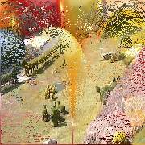

Scratch
B (second) clip gradually is revealed by scratching the A Clip
image frame, in a desired style similar to scratch cards. Falling rain,
tv noise, water fountain, laser beams, dust storm, O Rings, horizontal lines,
vertical lines are the styles
of scratch currently available.
All avisynth+ supported formats can be input.Thread safe.
Details of parameters
| Description |
Name |
Type |
Limits |
Default |
| A clip |
|
clip |
|
none |
| B clip |
|
clip |
|
none |
| Overlapping time in seconds |
|
float |
not more than clip length , must result in >2 frames. |
none |
| Scratch style |
style |
string |
"rain" "tv" "fount" "laser" "dust" "oring" "hline" "vline"
|
"rain" |
#Usage examples:-
Scratch(A, B,3.3,"laser")
Scratch(A, B,4)
Images during ition with style="fount" option:
 |
 |
 |